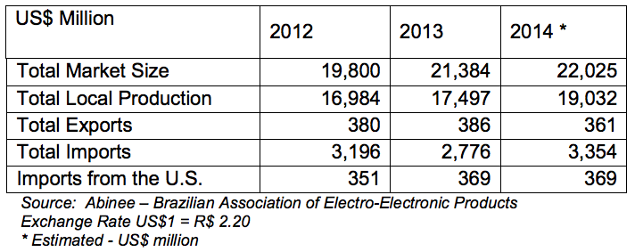

Brazil is the second-largest IT market among emerging economies, after China; and continues its stable, consistent growth trend, particularly when compared to other BRIC countries (Brazil, Russia, India and China) relative to its size, economic strength, and growth potential.
The IT segment in Brazil remains the seventh largest market in the world; however, it is forecasted to reach fifth by 2022.

The figures in the table reflect a very positive scenario for Brazil. Among all the BRIC countries, Brazil is second just behind China in terms of investments in information technology. The 2016 Summer Olympic Games in Rio de Janeiro will also prompt further IT investment in the country to support infrastructure construction facilities, transportation, and security.